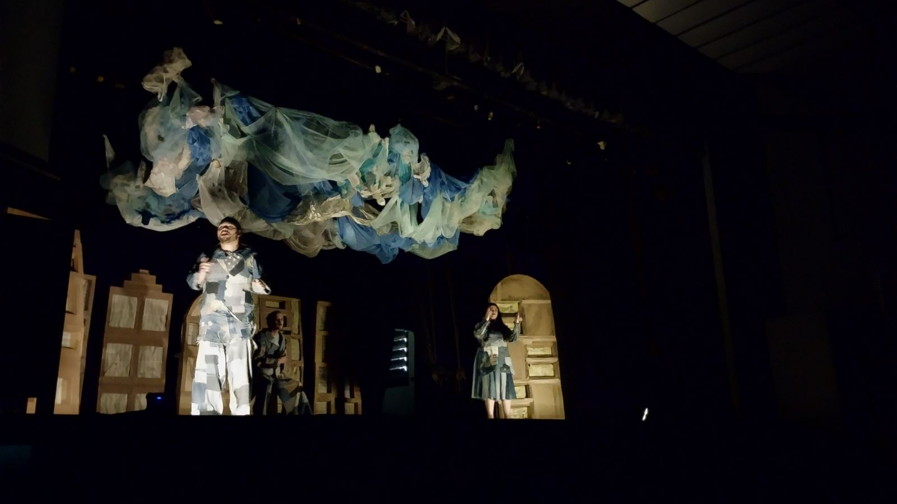
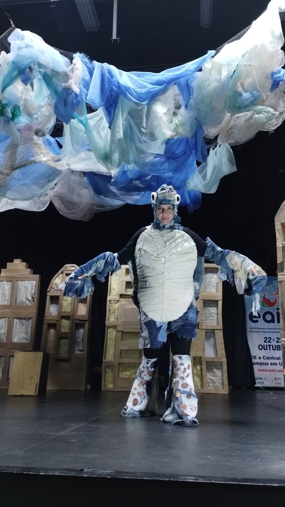
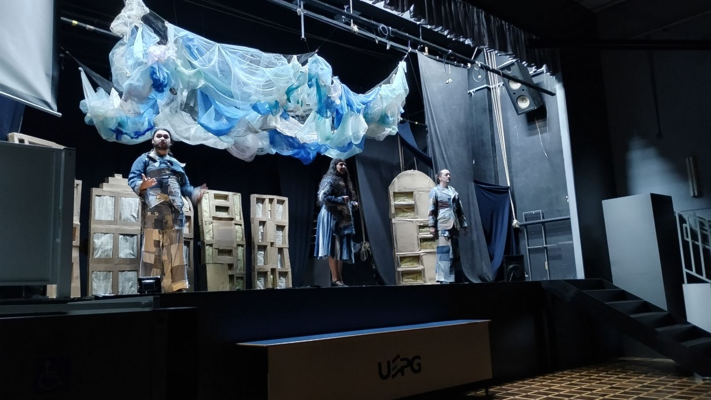
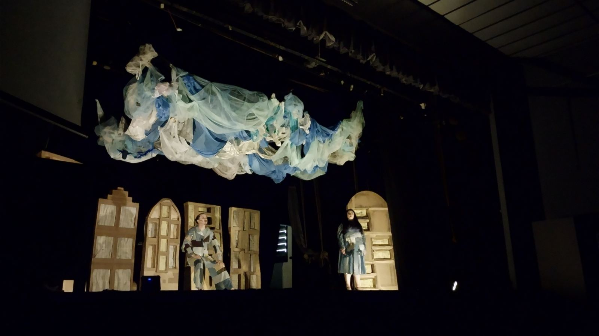
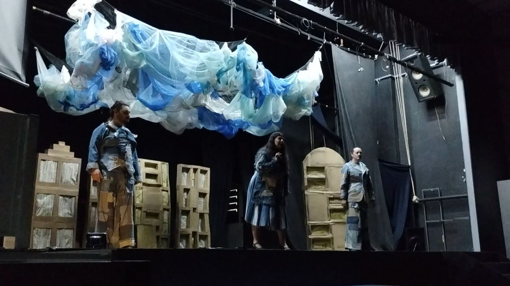
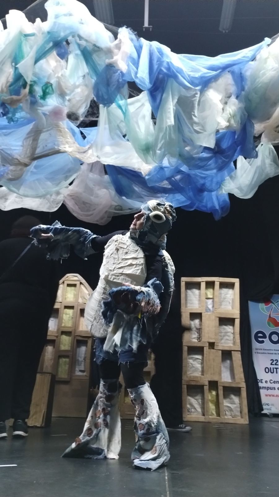
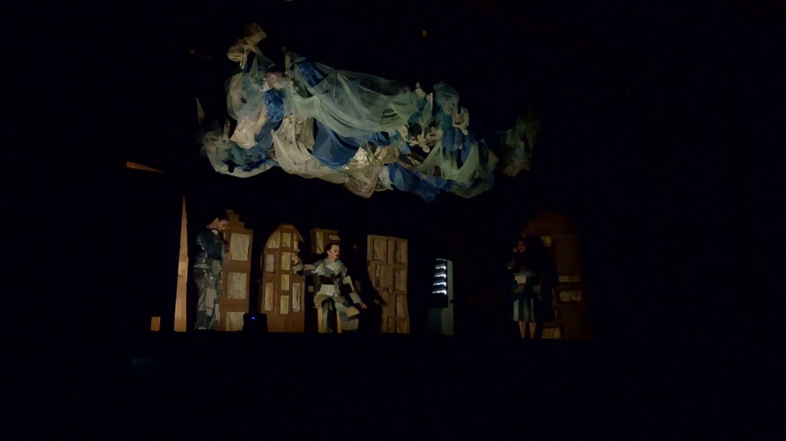
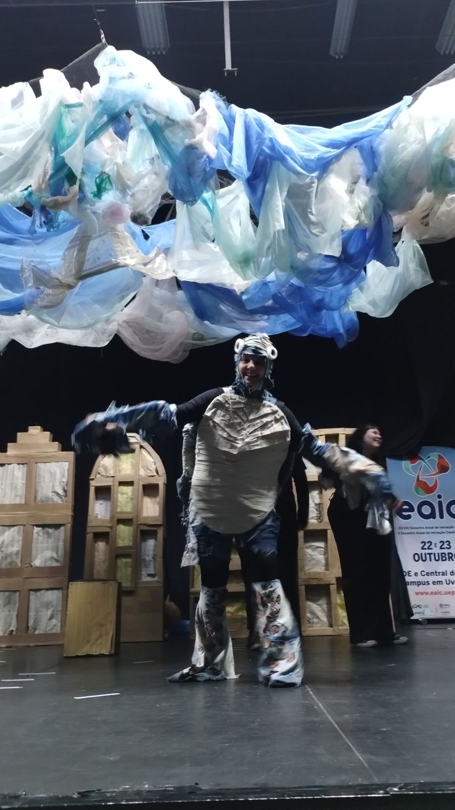
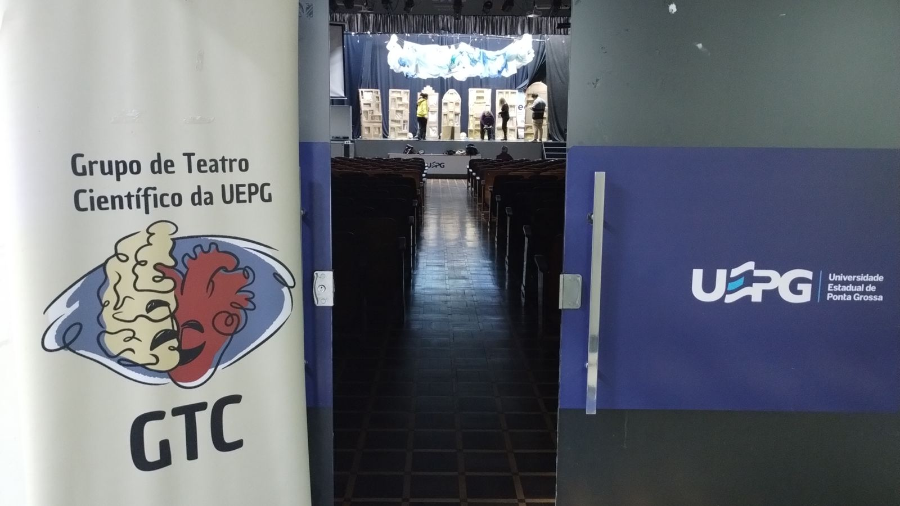

Orientadora
Professora universitária cega. Formula as hipóteses sobre o fim do mundo e conduz o método científico.

Foto: GTC/UEPG, 29/06/2026Uma peça de teatro científico, inspirada em Ailton Krenak, escrita para ser acessível a pessoas surdas, cegas e ouvintes desde o roteiro. Produto educacional da tese de doutorado de Talicia do Carmo Galan Kuhn.
Sobre o projeto
Uma sala de universidade parece ser o último lugar que restou depois do fim do mundo. Presos ali, uma orientadora e seu aluno testam hipóteses para descobrir o que aconteceu, enquanto a zeladora traduz tudo em Libras. A cada ensaio, o cenário se contrai e o céu desce um pouco mais.
A peça foi criada na tese Teatro em designer universal: a relação humano e natureza pautada na educação CTS, do Programa de Pós-Graduação em Ensino de Ciência e Tecnologia da UTFPR, com orientação de Awdry Feisser Miquelin e coorientação de Thaís Anholetto de Medeiros, em parceria com o Grupo de Teatro Científico da UEPG.

Explore o site






Objetivo 1 da tese: elaborar o roteiro de uma peça teatral científica na perspectiva do desenho universal.
Roteiro de Talícia do Carmo Galan Kuhn, Awdry Feisser Miquelin, Thaís Anholetto de Medeiros e Jocemar de Quadros Chagas, escrito entre dezembro de 2023 e abril de 2024 e registrado na Fundação Biblioteca Nacional (nº 903.813).
Professora universitária cega. Formula as hipóteses sobre o fim do mundo e conduz o método científico.
Orientando vidente. Vai ao fundo do palco fazer cada experimento mental e volta para contar o que viu.
Intérprete de Libras. Traduz todas as falas, anuncia cada cena e, no final, assume o protagonismo.
Objetivo 2 da tese: executar a peça teatral em desenho universal.
| Data | Evento | Local | Público aprox. |
|---|
Início › Fotos e vídeos
Clique em uma foto para ampliar e use as setas para passar pelas outras.
Novas fotos das apresentações e das premiações serão incluídas em breve.
Objetivos 2 e 3 da tese: investigar as concepções do público e as questões CTS que surgem na interação com a peça.
Em vez de questionários, as perguntas são feitas pela personagem Tartaruga, antes e depois do espetáculo. Ao final, cada participante recebe uma pequena tartaruga impressa em 3D.
As entrevistas de 2026 estão em análise. Os relatos do público serão publicados aqui depois de anonimizados.
Em 21 de abril de 2025, no World Creativity Day Brasil, personagens mascarados do GTC/UEPG surgiam ao longo da trilha dos arenitos. No fim do percurso, uma instalação feita de resíduos convidava ao toque. A pergunta norteadora era: o que fazer quando o céu pesa sobre nossas cabeças?
Perguntas feitas aos visitantes:
A tese adota a a/r/tografia, modalidade de pesquisa educacional baseada em arte criada na Universidade da Columbia Britânica por Rita L. Irwin e colaboradores. O nome junta os papéis de artista (artist), pesquisador (researcher) e professor (teacher) à escrita (graphy).
A pesquisadora está dentro do processo que investiga. Talicia é coautora do roteiro, integra o GTC/UEPG e, em cena, é a atriz que dá vida à Zeladora e traduz a peça em Libras.

A matriz cruza professores, estudantes, teatro em desenho universal e questões sociocientíficas, e gera dezesseis perguntas que orientam a análise. Escolha uma célula.
| Professores | Estudantes | Teatro em DU | QSC |
|---|
Objetivo 5 da tese: sistematizar o processo de criação em um material pedagógico para professores.
A ordem de tarefas que funcionou na criação de “Sete ensaios depois do fim do mundo”, apresentada no XV ENPEC, em Belém, em 2025.
O ponto de partida foi decidir que o texto dialogaria com Ailton Krenak, em especial a pandemia e a emergência climática.
Conhecer o assunto antes ajuda, mas não é obrigatório. A equipe leu os livros, outros textos e entrevistas de Krenak.
O Teatro do Absurdo trouxe falas de aparente normalidade em contraste com uma situação impossível.
A estratégia para iniciar a escrita foi assumir que o mundo já havia acabado.
Orientadora, aluno e zeladora, numa sala da universidade, cada uma com uma marca de acessibilidade.
Cada ensaio testa uma hipótese, da mais absurda à mais real. A repetição também pode dar conforto a espectadores autistas ou com TDAH.
O desfecho veio de um alerta indígena: cantar e dançar para suspender o céu.
Libras em cena, uma protagonista cega e audiodescrição fazem parte do texto desde o primeiro rascunho.
Projeto de extensão criado em 2022 para divulgação e alfabetização científica. Também produziu “Coração em Chagas”, “A que faz”, “AssistIA” e “Pingo: uma gotinha rumo ao mar”.